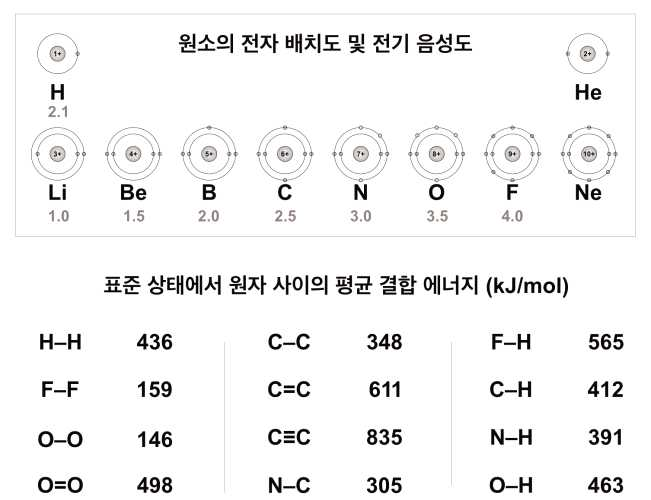

문제 2
인간의 몸을 구성하고 있는 원소의 조성 비율은 개수 기준 대략 \(\text{H:O:C:N} = 66:25:10:1\)이다. 이 중 대부분의 수소와 산소는 체중의 60%를 차지하는 물 분자를 형성하고 있다. 원자량은 \(\text{H} = 1\), \(\text{O} = 16\), \(\text{C} = 12\), \(\text{N} = 14\)이다.
(1) 인간의 몸에서 물 분자를 제외한 나머지 구성 물질의 원자 개수 비를 구하시오. \(\text{H}_{66}\text{O}_{25}\text{C}_{10}\text{N}_{1}\)의 화학식량은 6000이고, \(\text{H}_2\text{O}\)의 분자량은 18이다. [2점]
(2) 아래 주어진 원소의 전자 배치도, 전기음성도, 원자간 평균 결합 에너지 등을 고려하여 C, H, O, N이 생명체를 구성하고 생명 현상 유지에 유용하게 사용되는 이유를 세 가지 이상 논하시오. [3점]

표준 상태에서 원자 사이의 평균 결합 에너지 (kJ/mol)
| 결합 | 에너지 | 결합 | 에너지 | 결합 | 에너지 |
|---|---|---|---|---|---|
| H−H | 436 | C−C | 348 | F−H | 565 |
| F−F | 159 | C=C | 611 | C−H | 412 |
| O−O | 146 | C≡C | 835 | N−H | 391 |
| O=O | 498 | N−C | 305 | O−H | 463 |